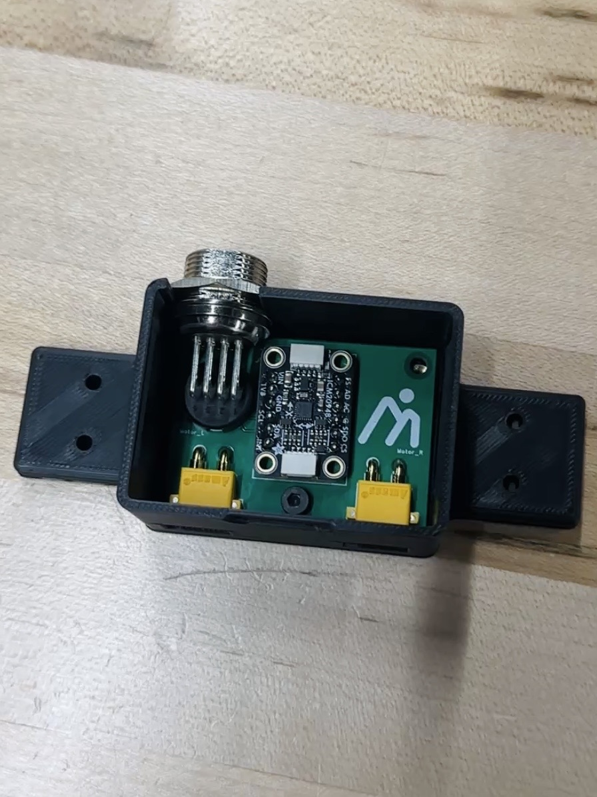
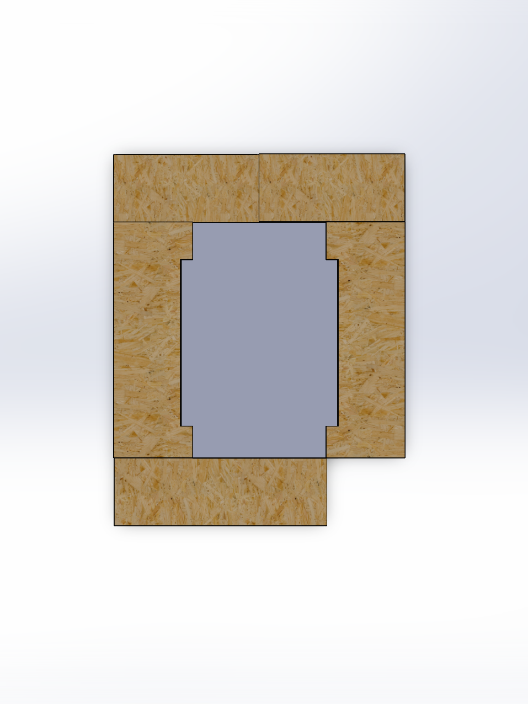
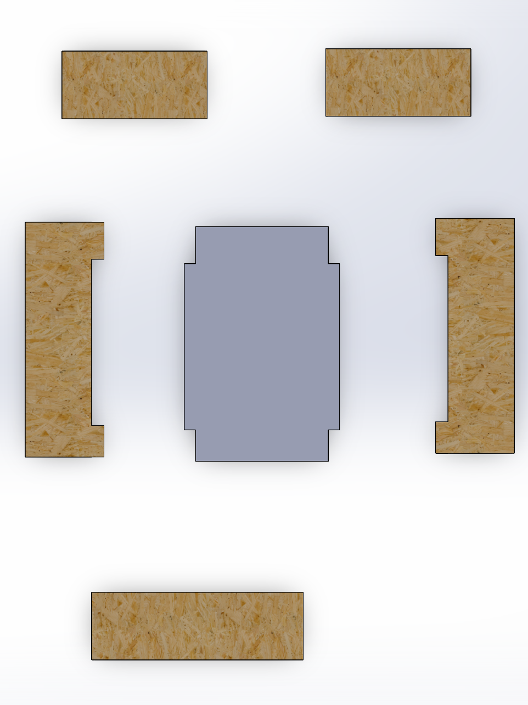

PROBLEM
Improve assistive device effectiveness without increasing user fatigue or reducing long-term wearability.
METHOD
Redesigned mechanical interfaces to prioritize anatomical alignment and load path efficiency before actuator selection. Iterated hardware with fast prototyping to validate human-in-the-loop constraints that are not captured in simulation alone.
RESULT
Hardware revisions improved comfort and motion naturalness in addition to reducing mass. The platform became better suited for extended user trials and data-driven assistance development.
SKILLS USED
SolidWorks, Git, Python, Microcontrollers, 3D Printing, Soldering